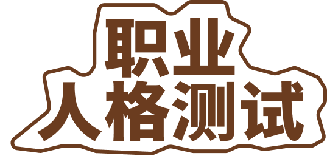

<!DOCTYPE html>
<html lang="zh-CN">
<head>
    <meta charset="UTF-8">
    <meta name="viewport" content="width=device-width, initial-scale=1.0, viewport-fit=cover, maximum-scale=1.0">
    <title>医生职业人格测试</title>
    <link rel="stylesheet" href="style.css">
</head>
<body>
    <div id="app">
        <!-- 页面内容将通过JavaScript动态生成 -->
    </div>

    <script>
        // 页面加载时检查用户状态
window.onload = function() {
    // 先检查 URL 参数（保持原有功能）
    if (checkUrlParams()) {
        return;
    }
    
    // 检查用户是否注册
    const userInfo = localStorage.getItem('userInfo');
    if (!userInfo || !JSON.parse(userInfo).registered) {
        // 如果未注册，跳转到注册页面
        window.location.href = 'register.html';
        return;
    }
    
    // 如果已注册，显示开始页面
    renderStartPage();
};
        // 完整的测试数据
        const testData = {
            questions: [
                {
                    id: 1,
                    text: "面对一个情绪激动、对治疗方案充满疑虑的患者家属，你首先会？",
                    options: [
                        { text: "用解剖图、数据和文献，清晰解释方案的原理和必要性。", scores: { 'A1': 1 } },
                        { text: "先安抚他的情绪，表示理解他的担心，建立信任关系。", scores: { 'A2': 1 } },
                        { text: "明确告诉他目前的最佳选择是什么，以及犹豫可能带来的后果。", scores: { 'A3': 1 } },
                        { text: "专注于演示治疗的关键步骤，用专业技艺打消技术性质疑。", scores: { 'A4': 1 } }
                    ]
                },
                {
                    id: 2,
                    text: "在科室团队建设中，你认为自己最能发挥价值的贡献是？",
                    options: [
                        { text: "确保每个人都清楚并遵守工作流程和规范，减少差错。", scores: { 'B1': 1 } },
                        { text: "分享前沿知识或带教年轻医生，提升团队整体水平。", scores: { 'B2': 1 } },
                        { text: "组织团建活动，或在冲突时充当'和事佬'，增强凝聚力。", scores: { 'B3': 1 } },
                        { text: "解决一个困扰大家已久的技术难题，或优化操作流程。", scores: { 'B4': 1 } }
                    ]
                },
                {
                    id: 3,
                    text: "最能让你从日常繁重工作中获得深层满足感的是？",
                    options: [
                        { text: "看到经手的每一个病例都流程规范、结果完美。", scores: { 'C1': 1 } },
                        { text: "成功完成了一台超高难度的手术，或诊断了一个罕见病。", scores: { 'C2': 1 } },
                        { text: "收到患者发自内心的感谢，或看到团队其乐融融。", scores: { 'C3': 1 } },
                        { text: "学习并掌握了一项全新技术，或对某个疾病有了全新认知。", scores: { 'C4': 1 } }
                    ]
                },
                {
                    id: 4,
                    text: "当你的诊疗意见在科室会议上被挑战时，你通常：",
                    options: [
                        { text: "准备更多支持性数据，乐于进行一场理性的学术辩论。", scores: { 'A1': 1 } },
                        { text: "更关注对方情绪和立场，尝试寻找一个双方都能接受的共识点。", scores: { 'A2': 1 } },
                        { text: "直指问题的核心，要求对方提出更具操作性的替代方案。", scores: { 'A3': 1 } },
                        { text: "认为实践是检验真理的标准，提议用实际效果或模拟来验证。", scores: { 'A4': 1 } }
                    ]
                },
                {
                    id: 5,
                    text: "在接手一个新项目时，你最先关注的问题是：",
                    options: [
                        { text: "我们的标准操作流程和质控点在哪里？", scores: { 'B1': 1 } },
                        { text: "这个项目的长远意义是什么？如何激发团队的热情？", scores: { 'B2': 1 } },
                        { text: "项目成员各自的优势和想法是什么？如何合理分工协作？", scores: { 'B3': 1 } },
                        { text: "项目的核心技术瓶颈是什么？如何解决它？", scores: { 'B4': 1 } }
                    ]
                },
                {
                    id: 6,
                    text: "你选择医生这个职业，内心深处最持久的驱动力是？",
                    options: [
                        { text: "履行'健康所系，性命相托'的社会责任与承诺。", scores: { 'C1': 1 } },
                        { text: "享受战胜疾病、突破生命科学极限带来的成就感。", scores: { 'C2': 1 } },
                        { text: "渴望与人建立深刻的连接，并通过帮助他人实现价值。", scores: { 'C3': 1 } },
                        { text: "对人类身体的奥秘和医学的未知领域充满无限好奇。", scores: { 'C4': 1 } }
                    ]
                },
                {
                    id: 7,
                    text: "在处理一份复杂的患者病历时，你更倾向于：",
                    options: [
                        { text: "制作详细的 timeline 和逻辑关系图，让病情演变一目了然。", scores: { 'A1': 1 } },
                        { text: "在记录中特别关注患者的心理状态和社会家庭因素。", scores: { 'A2': 1 } },
                        { text: "快速提炼出关键问题和待办事项列表，指导后续行动。", scores: { 'A3': 1 } },
                        { text: "对其中异常的影像学或检验指标进行深度挖掘和分析。", scores: { 'A4': 1 } }
                    ]
                },
                {
                    id: 8,
                    text: "如果让你为科室设计一个新的制度，你的重点是：",
                    options: [
                        { text: "确保制度的公平、稳定和可持续性，人人明确职责。", scores: { 'B1': 1 } },
                        { text: "制度要能鼓励创新和学习，为未来发展留出空间。", scores: { 'B2': 1 } },
                        { text: "制度要经过充分讨论，得到大多数人的认同，便于执行。", scores: { 'B3': 1 } },
                        { text: "制度必须能解决当前最影响效率的具体问题。", scores: { 'B4': 1 } }
                    ]
                },
                {
                    id: 9,
                    text: "在个人职业发展上，你更看重：",
                    options: [
                        { text: "在一个专业领域内成为最可靠、最资深的专家。", scores: { 'C1': 1 } },
                        { text: "不断攀登技术高峰，成为该领域内的'第一人'。", scores: { 'C2': 1 } },
                        { text: "建立一个有良好口碑和患者信任度的医疗团队。", scores: { 'C3': 1 } },
                        { text: "拥有探索不同亚专业、涉足交叉学科的自由度。", scores: { 'C4': 1 } }
                    ]
                }
            ],
            
            dimensions: {
                'A1': { name: '猫头鹰', type: '行为风格', icon: '🦉' },
                'A2': { name: '海豚', type: '行为风格', icon: '🐬' },
                'A3': { name: '狼', type: '行为风格', icon: '🐺' },
                'A4': { name: '猎豹', type: '行为风格', icon: '🐆' },
                'B1': { name: '基石', type: '团队角色', icon: '🧱' },
                'B2': { name: '灯塔', type: '团队角色', icon: '💡' },
                'B3': { name: '桥梁', type: '团队角色', icon: '🌉' },
                'B4': { name: '齿轮', type: '团队角色', icon: '⚙️' },
                'C1': { name: '大地', type: '核心驱动力', icon: '🌍' },
                'C2': { name: '火', type: '核心驱动力', icon: '🔥' },
                'C3': { name: '水', type: '核心驱动力', icon: '💧' },
                'C4': { name: '风', type: '核心驱动力', icon: '🌪️' }
            },
            
            results: {
    // 猫头鹰系列 (16种)
    'A1-B1-C1': {
        name: '逻辑的守护者',
        description: '你是一位严谨的体系构建者。你的思维如猫头鹰般冷静清晰，天然信赖逻辑与证据。在团队中，你是基石般的存在，致力于建立和维护稳固、可靠的医疗秩序。你内心的大地般厚重的责任感，让你将"零差错"视为最高追求。'
    },
    'A1-B1-C2': {
        name: '理性的革新者',
        description: '你以猫头鹰的逻辑构建基石般的稳定体系，却内心燃烧着火焰般的革新热情。你在保持严谨的同时，不断寻求技术突破，是医疗质量与技术创新并重的典范。'
    },
    'A1-B1-C3': {
        name: '秩序的关怀者',
        description: '你用猫头鹰的理性守护医疗秩序，同时怀抱着水一般的仁爱之心。你在严谨的流程中注入人文关怀，让冰冷的制度拥有温度。'
    },
    'A1-B1-C4': {
        name: '系统的探索者',
        description: '你以基石般的稳定支撑着医疗系统，却如风般渴望探索新知。你在维护秩序的同时，不断为体系注入新的知识与理念。'
    },
    'A1-B2-C1': {
        name: '严谨的引路人',
        description: '你如猫头鹰般逻辑严密，如灯塔般指引方向，内心坚守着大地的责任感。你是年轻医生最信赖的导师，用严谨的态度照亮后辈的道路。'
    },
    'A1-B2-C2': {
        name: '理性的启迪者',
        description: '你以逻辑启迪智慧，以热情点燃创新。在传道授业中，你既保持学术的严谨，又鼓励技术的突破。'
    },
    'A1-B2-C3': {
        name: '温暖的学者',
        description: '你兼具学者的严谨与师者的温暖，在传授知识的同时更注重培养医者仁心。'
    },
    'A1-B2-C4': {
        name: '开放的导师',
        description: '你以严谨的学术态度为基础，却保持开放的思维，鼓励学生探索多元的医学可能性。'
    },
    'A1-B3-C1': {
        name: '理性的协调者',
        description: '你用逻辑搭建沟通的桥梁，以责任感维系团队的稳定。在协调各方时，你总能找到最合理的解决方案。'
    },
    'A1-B3-C2': {
        name: '高效的联络官',
        description: '你以逻辑分析促进团队协作，以技术追求驱动效率提升，是跨科室合作的关键人物。'
    },
    'A1-B3-C3': {
        name: '共情的分析师',
        description: '你既能用逻辑分析问题，又能用共情理解各方需求，在复杂的人际网络中游刃有余。'
    },
    'A1-B3-C4': {
        name: '创新的沟通者',
        description: '你在维系团队和谐的同时，不断引入新的沟通方式和协作理念。'
    },
    'A1-B4-C1': {
        name: '精密的工程师',
        description: '你如精密的齿轮般驱动技术流程，以猫头鹰的严谨确保每个环节的准确无误。'
    },
    'A1-B4-C2': {
        name: '技术的架构师',
        description: '你既注重技术的精准执行，又追求技术的突破创新，是医疗技术发展的中坚力量。'
    },
    'A1-B4-C3': {
        name: '人本的技师',
        description: '你在追求技术完美的同时，不忘技术服务于人的本质，让高科技充满人文温度。'
    },
    'A1-B4-C4': {
        name: '前沿的工匠',
        description: '你以工匠精神打磨技术，以前沿视野探索可能，在专业领域不断开疆拓土。'
    },

    // 海豚系列 (16种)
    'A2-B1-C1': {
        name: '温暖的守护者',
        description: '你如海豚般温暖共情，如基石般可靠稳定，用关怀与责任共同守护医疗质量。'
    },
    'A2-B1-C2': {
        name: '激情的维稳者',
        description: '你在维护医疗秩序的同时，用激情感染团队，让稳定的体系充满活力。'
    },
    'A2-B1-C3': {
        name: '仁爱的基石',
        description: '你以仁爱之心行严谨之事，在恪守规范的同时给予患者最大的情感支持。'
    },
    'A2-B1-C4': {
        name: '开放的守护者',
        description: '你在守护传统价值的同时，保持开放的心态，为医疗体系注入新的关怀理念。'
    },
    'A2-B2-C1': {
        name: '心灵的导师',
        description: '你不仅传授知识技能，更注重培养医者仁心，是学生心灵的引路人。'
    },
    'A2-B2-C2': {
        name: '热情的启迪者',
        description: '你用热情点燃学生的学习兴趣，用共情理解他们的成长困惑。'
    },
    'A2-B2-C3': {
        name: '全人的教育家',
        description: '你注重培养学生的专业技能与人文素养，践行"全人"教育理念。'
    },
    'A2-B2-C4': {
        name: '创新的师者',
        description: '你在传承医学经典的同时，鼓励学生突破传统思维边界。'
    },
    'A2-B3-C1': {
        name: '责任的连接者',
        description: '你在连接各方时恪守责任，确保沟通的顺畅与医疗的安全。'
    },
    'A2-B3-C2': {
        name: '动力的枢纽',
        description: '你既是团队的粘合剂，又是前进的助推器，用热情驱动协作效率。'
    },
    'A2-B3-C3': {
        name: '共情的核心',
        description: '你天生就是情感的枢纽，能敏锐感知团队情绪，维系和谐的工作氛围。'
    },
    'A2-B3-C4': {
        name: '开放的协调者',
        description: '你在协调冲突时保持开放心态，总能找到让各方都满意的创新解决方案。'
    },
    'A2-B4-C1': {
        name: '关怀的技师',
        description: '你在精湛技术中注入人文关怀，让患者在接受治疗时感受到温暖。'
    },
    'A2-B4-C2': {
        name: '热情的工匠',
        description: '你以热情追求技术完美，让冰冷的医疗器械充满人性的温度。'
    },
    'A2-B4-C3': {
        name: '人性的艺术家',
        description: '你将医疗技术升华为艺术，在治疗中展现对人性的深刻理解。'
    },
    'A2-B4-C4': {
        name: '创新的关怀者',
        description: '你用创新思维改进技术流程，让患者关怀以更高效的方式实现。'
    },

    // 狼系列 (16种)
    'A3-B1-C1': {
        name: '果断的守护者',
        description: '你如狼般果决高效，如基石般稳固可靠，在危机时刻能迅速建立安全秩序。'
    },
    'A3-B1-C2': {
        name: '强势的革新者',
        description: '你以强势作风推动变革，用果决态度突破技术瓶颈，是科室改革的先锋。'
    },
    'A3-B1-C3': {
        name: '坚定的关怀者',
        description: '你在果断决策时不忘人文关怀，让高效的医疗不失温度。'
    },
    'A3-B1-C4': {
        name: '开放的改革者',
        description: '你用开放思维推动改革，以果决手腕落实创新，是传统与创新的桥梁。'
    },
    'A3-B2-C1': {
        name: '强势的导师',
        description: '你以强势风格指导学生，用坚定信念传承医疗责任，是严师亦是明师。'
    },
    'A3-B2-C2': {
        name: '激情的领袖',
        description: '你以激情感染团队，以果决引领方向，是技术攻关的灵魂人物。'
    },
    'A3-B2-C3': {
        name: '坚定的引路人',
        description: '你在严格要求学生的同时给予情感支持，培养德才兼备的医疗人才。'
    },
    'A3-B2-C4': {
        name: '开拓的教育家',
        description: '你以开拓精神改革教学模式，用坚定意志推动教育创新。'
    },
    'A3-B3-C1': {
        name: '高效的协调者',
        description: '你在协调资源时果决高效，在沟通各方时坚守原则，是团队的方向盘。'
    },
    'A3-B3-C2': {
        name: '动力的核心',
        description: '你既是团队的凝聚者，又是前进的驱动力，用激情点燃协作效率。'
    },
    'A3-B3-C3': {
        name: '坚定的连接者',
        description: '你在维系团队和谐时展现坚定立场，让沟通既有温度又有原则。'
    },
    'A3-B3-C4': {
        name: '创新的统帅',
        description: '你用创新思维改善团队协作，以统帅魄力推动改革落实。'
    },
    'A3-B4-C1': {
        name: '精准的指挥官',
        description: '你在技术操作中展现指挥才能，用果决态度确保流程精准。'
    },
    'A3-B4-C2': {
        name: '技术的将军',
        description: '你以将军气概统帅技术团队，用激情追求技术卓越。'
    },
    'A3-B4-C3': {
        name: '坚定的工匠',
        description: '你在追求技术完美时展现坚定意志，让精湛技艺服务人文关怀。'
    },
    'A3-B4-C4': {
        name: '改革的工程师',
        description: '你用创新思维改革技术流程，以果决手腕推动技术革命。'
    },

    // 猎豹系列 (16种)
    'A4-B1-C1': {
        name: '精准的守门人',
        description: '你如猎豹般专注精准，如基石般恪守规范，是医疗质量的最后防线。'
    },
    'A4-B1-C2': {
        name: '技术的突破者',
        description: '你以精准操作突破技术极限，用专注态度追求卓越成就。'
    },
    'A4-B1-C3': {
        name: '艺术的守护者',
        description: '你将医疗技术升华为艺术，在精准操作中注入人文情怀。'
    },
    'A4-B1-C4': {
        name: '探索的专家',
        description: '你在专业领域深度探索，用精准技艺开拓新的技术疆域。'
    },
    'A4-B2-C1': {
        name: '精准的导师',
        description: '你以精准要求培养学生，用专业态度传承医疗责任。'
    },
    'A4-B2-C2': {
        name: '技艺的大师',
        description: '你既是技术大师，又是激情导师，培养下一代技术领军人才。'
    },
    'A4-B2-C3': {
        name: '温暖的专家',
        description: '你在传授精湛技艺时不忘培养仁心，是德艺双馨的医学教育家。'
    },
    'A4-B2-C4': {
        name: '开放的宗师',
        description: '你以开放心态传授技艺，鼓励学生突破传统技术边界。'
    },
    'A4-B3-C1': {
        name: '技术的协调者',
        description: '你用技术专长促进团队协作，以精准思维优化沟通效率。'
    },
    'A4-B3-C2': {
        name: '创新的枢纽',
        description: '你既是技术核心，又是创新枢纽，用激情驱动团队技术进步。'
    },
    'A4-B3-C3': {
        name: '精准的沟通者',
        description: '你在技术沟通中展现精准思维，在团队协作中注入人文关怀。'
    },
    'A4-B3-C4': {
        name: '开放的专家',
        description: '你在专业领域深度钻研，同时保持开放心态促进跨领域合作。'
    },
    'A4-B4-C1': {
        name: '极致的技术家',
        description: '你追求技术的极致完美，用专注态度确保每个细节的精准。'
    },
    'A4-B4-C2': {
        name: '技艺的巅峰',
        description: '你站在技术领域的巅峰，用激情持续突破自我极限。'
    },
    'A4-B4-C3': {
        name: '人文的艺术家',
        description: '你将冰冷的技术转化为温暖的艺术，在精准中展现人性光辉。'
    },
    'A4-B4-C4': {
        name: '自由的探索者',
        description: '你在技术海洋中自由探索，用创新思维开拓无限可能。'
    }
}
                          };
    
        let currentQuestion = 0;
        let selectedOption = null;
        let scores = {
            'A1': 0, 'A2': 0, 'A3': 0, 'A4': 0,
            'B1': 0, 'B2': 0, 'B3': 0, 'B4': 0, 
            'C1': 0, 'C2': 0, 'C3': 0, 'C4': 0
        };

        const START_PAGE_ILLUSTRATION = 'https://www.figma.com/api/mcp/asset/1261098d-3556-4cde-b846-0c2b7b035670';

        // 渲染启动页
        function renderStartPage() {
            document.getElementById('app').innerHTML = `
                <div class="page start-page">
                    <div class="start-title-wrapper">
                        
                        <span class="start-title-tag">医生专属</span>
                    </div>
                    <div class="start-illustration">
                        
                    </div>
                    <button class="start-button" onclick="startTest()">开始测试</button>
                </div>
            `;
        }
    
        // 渲染问题页面
        function renderQuestion() {
            const question = testData.questions[currentQuestion];
            const totalQuestions = testData.questions.length;
            const progress = ((currentQuestion + 1) / totalQuestions) * 100;
            const progressPercent = Math.max(0, Math.min(100, Math.round(progress)));
            
            document.getElementById('app').innerHTML = `
                <div class="page question-page">
                    <div class="question-header">
                        <div class="question-status">
                            <span class="question-index">问题 ${currentQuestion + 1} / ${totalQuestions}</span>
                            <span class="question-percentage">${progressPercent}%</span>
                        </div>
                        <div class="progress-track">
                            <div class="progress-fill" style="width: ${progress}%"></div>
                        </div>
                    </div>
                    <div class="question">
                        <h2 class="question-title">${question.text}</h2>
                        <div class="options">
                            ${question.options.map((option, index) => `
                                <div class="option" onclick="selectOption(${index})">
                                    <span class="option-text">${option.text}</span>
                                </div>
                            `).join('')}
                        </div>
                    </div>
                    <button class="btn" id="next-btn" onclick="nextQuestion()" disabled>
                        ${currentQuestion === totalQuestions - 1 ? '查看结果' : '下一题'}
                    </button>
                </div>
            `;
        }
    
        // 选择选项
        function selectOption(index) {
            selectedOption = index;
            
            // 移除所有选项的高亮
            const options = document.querySelectorAll('.option');
            options.forEach(opt => opt.classList.remove('selected'));
            
            // 高亮当前选项
            options[index].classList.add('selected');
            
            // 启用按钮
            document.getElementById('next-btn').disabled = false;
        }
    
        // 下一题
        function nextQuestion() {
            // 记录当前题目的分数
            if (selectedOption !== null) {
                const currentScores = testData.questions[currentQuestion].options[selectedOption].scores;
                Object.keys(currentScores).forEach(dimension => {
                    scores[dimension] += currentScores[dimension];
                });
            }
    
            if (currentQuestion < testData.questions.length - 1) {
                currentQuestion++;
                selectedOption = null;
                renderQuestion();
            } else {
                showResult();
            }
        }
              
                // 开始测试
      function startTest() {
            currentQuestion = 0;
            selectedOption = null;
            // 重置分数
            Object.keys(scores).forEach(key => { scores[key] = 0; });
            renderQuestion();
        }
  
                // 显示完整结果
     function showResult() {
    const dimensionA = getTopDimension(['A1', 'A2', 'A3', 'A4']);
    const dimensionB = getTopDimension(['B1', 'B2', 'B3', 'B4']);
    const dimensionC = getTopDimension(['C1', 'C2', 'C3', 'C4']);
    
    const resultKey = `${dimensionA}-${dimensionB}-${dimensionC}`;
    const result = testData.results[resultKey] || {
        name: '独特的探索者',
        description: '你的组合非常独特，展现了多元化的职业特质。你在不同情境下能够灵活切换思维模式，是医疗团队中难得的全能型人才。'
    };          

    // 获取用户信息
    const userInfo = JSON.parse(localStorage.getItem('userInfo'));
    const avatarUrl = userInfo ? userInfo.avatar : 'images/default-avatar.png';

    document.getElementById('app').innerHTML = `
        <div class="page result-page">
            <div class="result-content">
                <!-- 头像和标题区域 -->
                <div class="result-header">
                    
                    <div class="result-title-container">
                        <!-- 1. 结果名称 -->
                        <div class="result-main-title">${result.name}</div>
                        
                        <!-- 2. 三个元素的文字表述 -->
                        <div class="result-combination">
                            ${testData.dimensions[dimensionA].name} · ${testData.dimensions[dimensionB].name} · ${testData.dimensions[dimensionC].name}
                        </div>
                    </div>
                </div>
                
                <!-- 3. 图标区域 -->
                <div class="result-icon-layout">
                    <!-- 动物形象 - 占据主要位置 -->
                    <div class="main-animal">
                        
                    </div>
                    
                    <!-- 右侧两个元素图标 -->
                    <div class="side-icons">
                        <div class="side-icon">
                            <div class="icon-circle">
                                
                            </div>
                        </div>
                        <div class="side-icon">
                            <div class="icon-circle">
                                
                            </div>
                        </div>
                    </div>
                </div>
                
                <!-- 4. 结果描述 -->
                <div class="result-description">
                    ${result.description}
                </div>
            </div>
            
            <!-- 5. 操作按钮 -->
            <div class="result-actions">
                <button class="btn-primary" onclick="shareResult()">分享结果</button>
                <button class="btn-secondary" onclick="restartTest()">重新测试</button>
            </div>
        </div>
    `;
}
        
          // 复制到剪贴板
    function copyToClipboard(text) {
            navigator.clipboard.writeText(text).then(() => {
                alert('结果已复制到剪贴板，快去分享给同事吧！\n\n' + text);
            }).catch(() => {
                const textArea = document.createElement('textarea');
                textArea.value = text;
                document.body.appendChild(textArea);
                textArea.select();
                document.execCommand('copy');
                document.body.removeChild(textArea);
                alert('结果已复制，快去分享给同事吧！');
            });
        }
                      // 重新开始
    function restartTest() {
            currentQuestion = 0;
            selectedOption = null;
            // 重置分数
            Object.keys(scores).forEach(key => { scores[key] = 0; });
            renderStartPage();
        }
        
                    // 获取维度最高分
   function getTopDimension(dimensions) {
            let topDimension = dimensions[0];
            let topScore = scores[topDimension];
            
            for (let i = 1; i < dimensions.length; i++) {
                if (scores[dimensions[i]] > topScore) {
                    topDimension = dimensions[i];
                    topScore = scores[dimensions[i]];
                }
            }
            
            return topDimension;
        }

        // 分享结果
        function shareResult() {
            const dimensionA = getTopDimension(['A1', 'A2', 'A3', 'A4']);
            const dimensionB = getTopDimension(['B1', 'B2', 'B3', 'B4']);
            const dimensionC = getTopDimension(['C1', 'C2', 'C3', 'C4']);
            const resultKey = `${dimensionA}-${dimensionB}-${dimensionC}`;
            const result = testData.results[resultKey] || {
                name: '独特的探索者',
                description: '你的组合非常独特，展现了多元化的职业特质。'
            };

            const shareText = `我的医生职业人格是：${testData.dimensions[dimensionA].name}-${testData.dimensions[dimensionB].name}-${testData.dimensions[dimensionC].name}（${result.name}）\n快来测试你的医生职业人格魔方吧！`;

            copyToClipboard(shareText);
        }

        // URL参数检测函数
        function checkUrlParams() {
            const urlParams = new URLSearchParams(window.location.search);
            
            // 检查是否有testresult参数
            if (urlParams.has('testresult')) {
                // 设置测试用的分数，确保每个维度都有一个明确的最高分
                const testScores = {
                    'A1': 3, 'A2': 1, 'A3': 0, 'A4': 0,  // 猫头鹰最高
                    'B1': 1, 'B2': 0, 'B3': 3, 'B4': 0,  // 桥梁最高  
                    'C1': 0, 'C2': 0, 'C3': 3, 'C4': 1   // 水最高
                };
                
                // 更新分数并显示结果
                Object.keys(testScores).forEach(key => {
                    scores[key] = testScores[key];
                });
                
                showResult();
                return true;
            }
            
            return false;
        }

        // 初始化
if (!checkUrlParams()) {
    // 检查用户是否注册
    const userInfo = localStorage.getItem('userInfo');
    console.log('用户信息:', userInfo); // 调试用
    
    if (!userInfo || !JSON.parse(userInfo).registered) {
        console.log('未注册，跳转到注册页面'); // 调试用
        // 如果未注册，跳转到注册页面
        window.location.href = 'register.html';
        return;
    }
    
    console.log('已注册，显示开始页面'); // 调试用
    renderStartPage();
}
    </script>
</body>
</html>